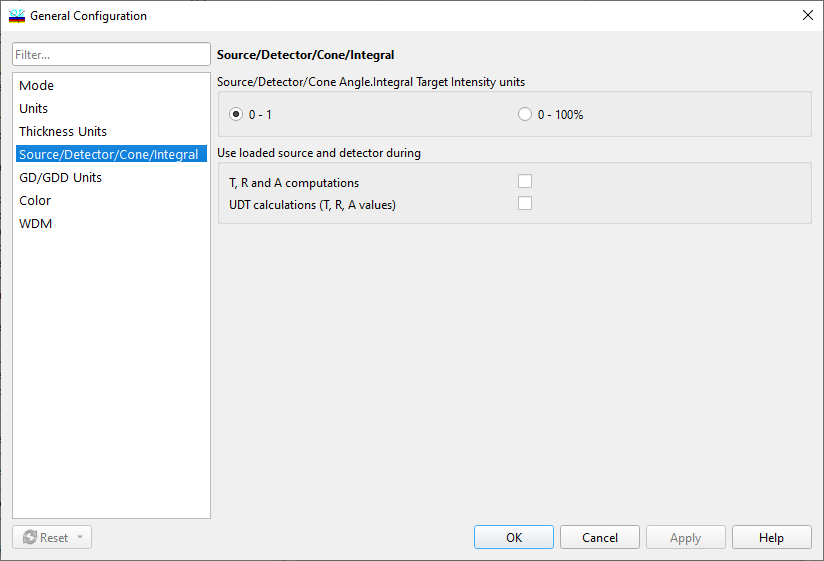

Source/Detector/Cone/Integral
Source/Detector/Cone/Integral

The Source/Detector/Cone Angle/Integral Target Intensity units group allows the user to select preferred units for light source and detector spectral power distributions.
The “Use loaded source and detector during T, R and A computations” checkbox allows the user to apply loaded light source and detector data for computations of transmittances, reflectances, and absorptances. If this box is not checked, the light source and detector data are used only in color calculations.
UDT calculations (T, R, A values) allow specifying if loaded source and detector data are also used in UDT calculations.